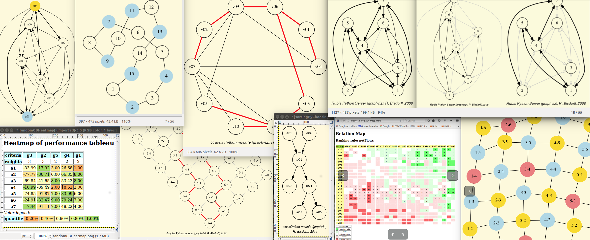

Documentation of the Digraph3 Python resources¶
- Author
Raymond Bisdorff, Emeritus Professor of Computer Science and Applied Mathematics
- Version
Python 3.9.2
- Url
- Copyright
Bisdorff Copyright 2013-2021
{kind=link}

Contents¶
-
Start here
-
Technical documentation and source code of all modules
-
Pearls of bipolar-valued epistemic logic
Algorithimc Decision Theory Lectures
2x2 reduced copies of the presentation slides-
Historical case studies and example graphs
Indices and search results¶
Introduction¶
The Digraph3 documentation, available on the Read The Docs site: https://digraph3.readthedocs.io/en/latest/, describes the Python3 resources for implementing decision aid algorithms in the context of a bipolar-valued outranking approach ([BISD-15], [BISD-00]). These computing resources are useful in the field of Algorithmic Decision Theory and more specifically in outranking based Multiple Criteria Decision Aid (MCDA). They provide practical tools for a Master Course on Algorithmic Decision Theory tought at the University of Luxembourg.
The documentation contains, first, a set of tutorials introducing the main objects like digraphs, outranking digraphs and performance tableaux. There is also a tutorial provided on undirected graphs. Some tutorials are problem oriented and show how to compute the winner of an election, how to build a best choice recommendation, or how to linearly rank or rate with multiple incommensurable performance criteria. Other tutorials concern more specifically operational aspects of computing maximal independent sets (MISs) and kernels in graphs and digraphs. The tutorial about split, interval and permutation graphs is inspired by Martin Golumbic ‘s book on Algorithmic Graph Theory and Perfect Graphs ([GOLU-04]). We also provide a tutorial on tree graphs and spanning forests.
- Digraph3 Tutorials
- Preface
- Working with the Digraph3 software resources
- Manipulating
Digraphobjects- Working with the
outrankingDigraphsmodule- Generating random performance tableaux with the
randPerfTabsmodule- Computing the winner of an election with the
votingProfilesmodule- Ranking with multiple incommensurable criteria
- The best academic Computer Science Depts: a ranking case study
- Computing a best choice recommendation
- Alice’s best choice: A selection case study
- Rating by sorting into relative performance quantiles
- Rating by ranking with learned performance quantile norms
- The best students, where do they study? A rating case study
- HPC ranking with big outranking digraphs
- Working with the
graphsmodule- Computing the non isomorphic MISs of the 12-cycle graph
- On computing digraph kernels
- About split, interval and permutation graphs
- On tree graphs and graph forests
- Appendices
The second Section concerns the extensive reference manual of the collection of provided Python3 modules, classes and methods. The main classes in this collection are the digraphs.Digraph overall root class, the perfTabs.PerformanceTableau class and the outrankingDigraphs.BipolarOutrankingDigraph class. The technical documentation also provides insight into the complete source code of all modules, classes and methods.
- Technical Reference of the Digraph3 modules
- Installation
- Organisation of the Digraph3 modules
- digraphs module
- randomDigraphs module
- graphs module
- perfTabs module
- performanceQuantiles module
- randomPerfTabs module
- outrankingDigraphs module
- xmcda module
- sparseOutrankingDigraphs module
- sortingDigraphs module
- votingProfiles module
- linearOrders module
- transitiveDigraphs module
- randomNumbers module
- digraphsTools module
- arithmetics module
- Cythonized modules for big digraphs
- Indices and tables
- Tutorials
The third Section exhibits some pearls of bipolar-valued epistemic logic that enrich the Digraph3 resources. These short texts illustrate well the very computational benefit one may get when working in a bipolar-valued logical framework. And, more specifically, the essential part the logically neutral undeterminate value is judiciously playing therein.
- Advanced Topics
- Coping with missing data and indeterminateness
- Ordinal correlation equals bipolar-valued relational equivalence
- Bipolar-valued kernel membership characteristic vectors
- On confident outrankings with uncertain criteria significances
- On stable outrankings with ordinal criteria significance
- On unopposed outrankings with multiple decision objectives
- Two-stage elections with multipartisan primary selection
- Bibliography
The fourth section provides 2x2-reduced notes of the author’s lectures on Algorithmic Decision Theory given at the University of Luxembourg during Spring 2020.
The last section gathers historical case studies with example digraphs compiled before 2006 and concerning the early development of the Digraph3 collection of python3 modules for implementing tools and methods for enumerating non isomorphic maximal independent sets in undirected graphs and computing dominant digraph kernels.
References¶
- BISD-15
Bisdorff, L.C. Dias, P. Meyer, V. Mousseau and M. Pirlot (Eds.) (2015). Evaluation and decision models with multiple criteria: Case studies. Springer-Verlag Berlin Heidelberg, International Handbooks on Information Systems, ISBN 978-3-662-46815-9, 643 pages (see http://hdl.handle.net/10993/23698).
- BISD-00
Bisdorff (2000). “Logical foundation of fuzzy preferential systems with application to the Electre decision aid methods”, Computers and Operations Research, 27: 673-687 (downloadable PDF file 159.1kB)
- GOLU-04
Ch. Golumbic (2004), Agorithmic Graph Theory and Perfect Graphs 2nd Ed., Annals of Discrete Mathematics 57, Elsevier.